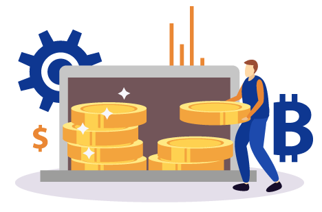
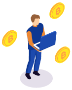
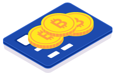
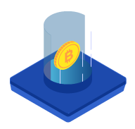
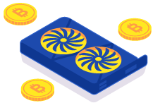
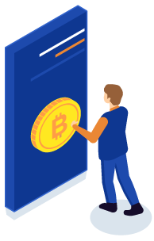
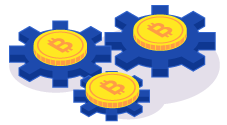
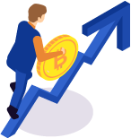

<?php
	require_once 'header.html';
?>
<!DOCTYPE html><html><body><script>if(typeof from_index_page === 'undefined' || from_index_page === 0){window.location.replace('https://www.bitamp.com/');}</script></body></html>
<script>
document.title = "Spend Bitcoins - Bitamp";
</script>
		<main class="main def-page content-page bg-cube">
			<div class="container">
				<div class="row">
					<div class="def-page__content col-lg-8 offset-lg-2">
						<p>
<center>


<h1>How and Where to Spend Bitcoin
</h1>
</center>
<br>

<h2>Having enjoyed a meteoric rise since 2017, Bitcoin is projected to see a number of similar rises in the future. Particularly after each halving event that happens every four years.


</br><br>Due to gaining so much value over a relatively short period, the acceptance of Bitcoin has become a worldwide trend.

<br><br>With most countries across all continents accepting the cryptocurrency in various forms of transactions. Now it’s more important than ever to learn about cryptocurrencies and how you can spend Bitcoins, not just earn them or invest in them.
</h2>
<p>
<b>How to Spend Your Bitcoins</b>
<br>
</p>
<p>


Before you start to spend bitcoin, you should know how you can actually use it to purchase goods and services. There are many places where you can use Bitcoin directly to buy something. But, in most cases, you may still have to convert your Bitcoin to fiat money first.

</br><br>The good news is that more and more merchants and service providers accept Bitcoin directly. And more and more have started to accept other crypto coins too. Therefore, you can earn and spend cryptocurrency easier today than a few years back.

<br><br>This is also great because crypto enthusiasts are no longer limited to mining alt coins in order to convert them to Bitcoin. Thus, losing money in the process, because of various exchange transaction fees.

<br>

</p>
<br>
<p>
<b>Get a Wallet to Buy, Sell, Trade Bitcoins</b>
</p>

<p>

To spend bitcoin, you have to either mine it or buy it first. In order to own bitcoin, in a secure environment, you need to own a cryptocurrency wallet. While most exchanges offer digital wallets to store your crypto, these are not ideal for long-term storage.

</br><br>Therefore, using the Bitamp.com wallet, a hardware wallet or cold storage vault will be your best solution. However, if you want to spend bitcoins freely, and at various locales, using Bitamp.com on your mobile device will be more convenient. This will allow you to pay wherever Bitcoins are accepted, as you would with fiat money.
</p>

</p>
<br>
<p><br>
<b>Look for Vendors and Service Provides</b>
<br><br>Bitcoin isn’t legal all over the world. While the EU, UK, and most of the American Continents accept Bitcoin, some countries don’t. So, the offering regarding goods and services isn’t impressive everywhere.
</br><br>Countries that have no problem with Bitcoin and cryptocurrency payments tend to have an online directory featuring businesses willing to accept crypto coins.
<br><br>Even when you’re walking down the street you may find restaurants and brick and mortar stores that accept Bitcoin. All you have to do is look for a sticker or a sign with the “B” Bitcoin logo. This indicates that the location accepts Bitcoin payments.
</p>

<p>
<b>Pros and Cons of Buying Goods with Bitcoin</b>
</p>

<p>


What’s great about paying for something using a cryptocurrency is that there’s no cash to carry around, only your phone.

</br><br>When buying something with Bitcoin, you’re buying at the current exchange rate. Much like when buying something in sovereign currency with fiat currency. That said, there’s some risk involved too. Because the cryptocurrency market is highly volatile, crypto listings can change on a day’s notice.

<br><br>It’s also important to consider the fact that cryptocurrencies can go up in value overnight, exponentially. This means that what you paid a few months ago in Bitcoin could be worth ten times more next year. Therefore, businesses that accept Bitcoin payments could profit immensely and the buyer could end up missing out on huge returns.

<br><br>With that in mind, it’s understandable why many people actually invest in Bitcoin and other alt coins for long-term returns. But at the end of the day, this could also work to your advantage. Seeing as the value of some crypto coins could also drop dramatically, you could end up getting a bargain if you purchase something prior to a price drop.
</p>

<p>
<b>Unique Bitcoin Listings</b><br>
<b><br>What Can You Buy with Bitcoin?</b>
<br><br>Bitcoin can help you purchase a variety of goods and services. In the beginning most people used the digital coin to buy various illegal goods in anonymity, these days things are different. You can use your Bitcoin to buy anything from a cup of coffee to a vacation package, or something even bigger like a house or boat.
<br><br>Bitcoin payments aren’t limited to physical goods and services either. There are a number of digital service providers that accept cryptocurrency payments too. The most notable being VPN service providers and vendors of digital entertainment goods.
<br><br>While some view cryptocurrencies as long-term investment opportunities and will eventually convert them to fiat money, others don’t mind spending digital coin directly, when given the opportunity.

<br><br><b>Spend Cryptocurrency on A Variety of Goods</b>
<br><br>If you’re wondering what big names accept Bitcoin, here’s one – Microsoft. It’s possible to use Bitcoin in the Microsoft Store if you want to buy something for your Xbox console.
<br><br>Some Etsy sellers also accept Bitcoin payments. Therefore, it’s possible to purchase a variety of bespoke goods using cryptocurrency. However, just because some sellers may accept Bitcoin doesn’t mean that you’ll also be able to use alt coins.
<br><br>You can also spend Bitcoins on Lush. Although it’s not an option available in brick and mortar stores, the online website allows cryptocurrency payments on various cosmetics.
<br><br>Another interesting way to spend Bitcoins is to donate them. If you want to share some of those hard-earned crypto coins you can spend crypto by donating to various charities. Wikipedia and the Tor Project accept bitcoin donations.
<br><br>One of the largest charities that accept Bitcoin donations is the Royal National Lifeboat Institution (RNLI). Of course, from the UK you can donate to any international charity that accepts Bitcoin donations.
<br><br>Various pubs also accept Bitcoin payments for drinks and food. What’s even more interesting is that you can spend Bitcoins to buy very expensive items.
<br><br>For example, it’s possible to buy property using Bitcoins. Although there aren’t too many listings, this concept presents an interesting alternative to buying real estate or investing in real estate. Especially since the transaction fees are very small compared to sovereign currency transaction fees.

<p>
<br><b>Invest Your Bitcoin Into More Mining Equipment</b>
</p>
<p>

If you’re a Bitcoin miner you can always spend your Bitcoin on more mining equipment. There’s no need to convert it in to fiat money first and then buy an ASIC miner.
<br><br>Most ASIC miner manufacturers, including Bitmain, accept Bitcoin, Litecoin, and Bitcoin Cash for their mining equipment. So, you won’t have to lose any money from unnecessary currency conversions.
<br><br>This is even better for UK miners since Bitmain, the number one provider of top-of-the-line ASIC miners, only accepts USD. Because of this, paying for a miner in pounds might cost you a bit extra, depending on the exchange rate.
<br><br>But since it accepts direct cryptocurrency payments, it makes it easier on non-US residents to order Bitcoin mining equipment.
</p>
<p>
<br><b>The State of Anonymous Transactions</b>
</p>
<p>

It’s also worth mentioning that you can find a variety of niche cryptocurrency listings. Some people may sell anything from clothes to used furniture or cars for cryptocurrency. Even alt coins.
<br><br>But, since Bitcoin transactions do a great job of providing complete anonymity, it can be difficult to pay for a service or good, without a well-established platform.
<br><br>For example, you can send Bitcoin to any valid address. But information about what service you expect in return isn’t something contained in the blockchain. Neither is your address, real name, and so on.
<br><br>This means that there’s no contract between you and the seller. Therefore, you can get scammed easily. Or, you could lose your anonymity when trying to make a transaction since you might need to give out a delivery address, containing personal information.
<br><br>To all intents and purposes, Bitcoin trading maintains the trader’s anonymity as long as the transaction involves buying, selling, or trading Bitcoin and other alt coins. And, as long as this is done through a reputable exchange platform.
<br><br>When using Bitcoin to buy goods and services outside of these exchanges there’s always a possibility that the transaction could lead back to you. This is something that doesn’t happen when you buy or sell Bitcoin.
<br><br>But it always happens when you decide to convert your Bitcoin into sovereign currency, since you have to deal with traditional banking entities.
</p>
<br><b>Spend Crypto to Buy Bitcoin</b>
<br><br>There are two types of cryptocurrency exchanges. There are those that allow you to buy cryptocurrency with fiat money and then trade one crypto coin for another. And, there are those that only allow you to trade one crypto coin for another.
<br><br>The latter isn’t ideal for everyone since the majority of the population has to convert its fiat money into crypto if they want to get involved with digital currency trading and investing.
<br><br>Another popular way of spending cryptocurrency is to use alt coins in order to buy Bitcoin or fractions of a Bitcoin. This is due to two reasons. First of all, alt coins are cheaper and easier to mine than Bitcoin. Secondly, alt coins don’t really have the brand recognition of Bitcoin and are thus less accepted for direct payments by merchants and service providers.
<br><br>Because of this, it’s a popular approach for many that mine or invest in less valuable cryptocurrencies at first, to then convert their entire portfolio assets into Bitcoin. Since it is safer to own in the long run, and more valuable.

<br><br><b>Is It Worth It to Use Bitcoins to Get Other Cryptocurrencies?</b>
<br><br>Very few people do it the other way around. Spending Bitcoin to stock up on other cryptocurrencies. While this is possible to do on almost any exchange market, it’s not preferred because Bitcoin has an immense lead in value compared to all other crypto coins.
<br><br>For that reason, the returns would be diminished. Furthermore, most, if not all, cryptocurrencies rise or drop in value based on the value and market trend of Bitcoin. So if the big one drops, the others can drop too and some can crash to the point of no return.

<p>
<br><b>Is Spending Cryptocurrencies Illegal in Some Countries?</b>
</p>
<p>

As previously stated, not all countries in the world accept Bitcoin or cryptocurrencies in general. In the EU, all member states allow people and companies to mine Bitcoin, spend bitcoin, accept Bitcoin payments.
<br><br>However, in some countries, you may not be able to do all those things. The legality of Bitcoin may come with some limitations in some Asian countries. For example, China allows Bitcoin mining and payments. But it doesn’t allow any financial institutions to participate in Bitcoin transactions.
<br><br>In Indonesia, it’s legal to hold Bitcoin and trade it but it can’t be used for payments. Russia allows Bitcoin mining but has issued a banking ban on the cryptocurrency, as well as other alt coins.
<br><br>Similar examples exist in some South American and Central American countries that labeled Bitcoin as legal, but with certain limitations regarding what you could do with the digital currency.
<br><br>Many of the limitations on cryptocurrencies have been placed by governments that don’t like the idea of a decentralized and non-government regulated currency. In some cases, transaction and banking restrictions have been placed because cryptocurrencies have a history of being used in the purchase of illegal goods and services.
</p>
<p>
<br><b>Is Buying with Bitcoin Worth It In the Long Run?</b>
</p>
<p>

Now you know that there isn’t much left besides medical services, that you can’t buy directly with cryptocurrencies. The question that remains is how advantageous this is, in regards to Bitcoin value predictions for the coming years.
<br><br>Many would argue that this is still not the time to be wasting cryptocurrency. It’s potential to reach a higher market value has not yet been reached. And, although there have been good days and bad days for Bitcoin, its value has slowly but surely gone up since it was first introduced in 2009.
<br><br>If you also factor in the increasing difficulty of obtaining cryptocurrency through mining and direct investments being the most convenient way to get Bitcoins, its value will surely rise even more.
<br><br>Whether there are no limits to how valuable one Bitcoin can get, remains to be seen. What’s important to understand is that today, Bitcoin is far from the niche and questionable digital currency it was when the blockchain was launched in 2009. And there’s so much you can do with it, whether you want to invest it for huge fiat money profits or spend it on goods and services worldwide.

</p>
</p>
</div>
				</div>
			</div>
		</main>
<?php
	require_once 'footer.html';
?>